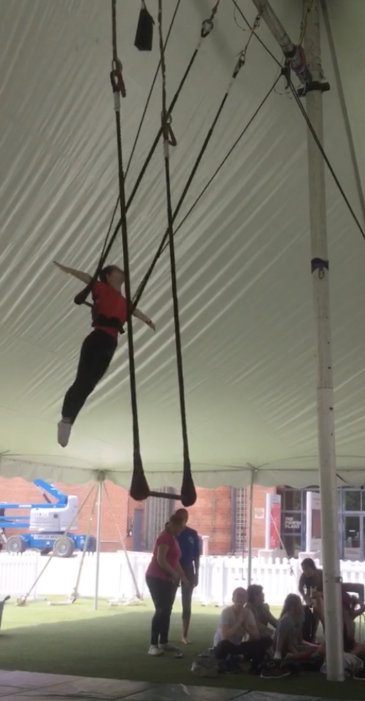

Circus
I first started going to circus camp when I was eight and I have been going every summer since. Last summer was the first time in six years that I didn't go due to COVID. At circus camp, I learn and perform everything from stilt walking and juggling to flying through the air on a swinging trapeze. My favourite part of circus is the aerial equipment. This includes things like the trapeze, silks, and hoop. I especially love doing drops. These consist of falling for a few seconds and then catching yourself before you actually lose control. I love pushing past the limits of what scares me and the rush of adrenaline I get as I'm falling or flying through the air. Doing circus in and outside of camp has helped be build strength, flexibility and balance as well as taught me many things like how to conquer fear, put full trust in someone else, and follow instructions as they're being given out.
Skiing
I've been skiing since I was 7 or 8 years old. Every winter, my family goes on a ski trip, usually to a mountain we've never been to before. I've skied in Ontario, Quebec, B.C, Alberta and New York. Being able to see so many beautiful views from different mountains and ski down all kinds of different trails is one of the reasons that I love the winter so much. I love every single part of the skiing package, riding up the chair, enjoying the scenery at the top, racing down the mountain, and finally warming up in the chalet with a cup of hot chocolate.
Baking
I'd always enjoyed baking with my parents and friends when I was younger, but I really got into baking independently a few years ago and I started baking regularly during quarantine when I had a lot of extra time to spare. I like baking because it helps me to take my mind off of other things and destress. It's so easy to get lost in measuring and mixing ingredients and it's very relaxing for me. Additionally, after you're done you get food which is always awesome. I have an obsession with all things chocolate so when I bake, I tend to make a lot of chocolate things. In quarantine, I started to try baking new things. I started making more advanced pastries like breads, macarons and eclairs. I even made an whole pie from scratch which took me an entire day. Things don't always turn out perfect and I've had my fair share of fails, but I've learned a lot about baking and I hope to continue expanding my baking vocabulary even though I have less free time now.
My Go-To Sugar Cookie Recipe
| Ingredients | Directions |
|---|---|
|
|
Music
I've always had a really strong connection to music. I love creating music, playing music, and most of all, listening to music. I started learning the piano when I was 6 or 7, and I still take lessons now. Additionally, I love to sing. If you ask any of my friends or family members, they'll tell you that I'm always singing. I like to sing while I'm playing the accompaniment on the piano and I've also written some terrible songs of my own. The reason I love to sing is because I listen to music almost all day. I like being introduced to new artists and songs. I'm always willing to listen to a new artist or genre and music is one of my favourite things to talk about.
Hiking
I love being in nature. My family has travelled to multiple national and provincial parks all over Canada and I've hiked some pretty amazing trails. I like hiking because it's always peaceful on the trails, and walking gives me time to think about nothing and everything at the same time. I also like taking photos along the trails and looking for wildlife and plants. There is so much beauty in nature and I always feel happiest when I'm outside.
Back to Top